Version: 5.6.2 | Released: 1st September 2015 |
What's new?
Thank you!
Thank you for purchasing this product. If you have any questions that are beyond the scope of this documentation, please feel free to email us.
About this item
LayerSlider WP is a premium multi-purpose slider for creating image galleries, content sliders, and mind-blowing slideshows with must-see effects, even from your WordPress posts and pages.
It uses cutting edge technologies to provide the smoothest experience that’s possible, and it comes with more than 200 preset 2D and 3D slide transitions. It has a beautiful and easy-to-use admin interface with supporting modern features like drag n’drop WYSIWYG slider builder, real-time previews, timeline view, Google Fonts and transition builder for custom animations.
It’s device friendly by supporting responsive mode, multiple layouts, touch gestures on mobile devices, and uses techniques like lazy load and conditional script loading for optimal performance. You can add any content into sliders, including images, text, custom HTML, YouTube and Vimeo videos or HTML5 self-hosted multimedia contents. It’s also SEO friendly by allowing you to build semantic markup with custom attributes that search engines can index easily.
LayerSlider comes with 13 built-in skins, and it has tons of options to entirely customize the appearance and behavior of your sliders at the smallest detail.
Slider features
General Features
Super smooth hardware accelerated CSS3 transitions with jQuery fallback
Fully responsive & multiple layouts support
High compatibility with many fallback features for old browsers
Lazy loading images for better performance
Unlimited number of layers with image, video, audio, text or custom HTML content
Powerful API for more customization
SEO friendly
Multiple sliders can be added on the same page
Included free slide transition gallery
Very detailed documentation with examples
Unlimited variations of usage (image slider, image slider with text, content slider, video gallery slider, mixed content slider, banner rotator, carousel, etc.)
Free updates & support
Slider Layout & Appearance
Responsive, full-width, full size or fixed dimensions layout
Responsive under & Layers container features for full-width sliders
13 skins included
Skins PSD file included for easily creating your own skins
Option for specifying a global background color or image to the slider
Slideshow
Auto-start slideshow (can be disabled)
Pause slideshow on hover feature
Starting with specified slide
Optional random slideshow feature
Option for fade in the first slide without animating the layers
Option for backwards-slideshow (Two way slideshow)
Looping feature
Navigation
Bullets, hover thumbnails or thumbnails
Touch navigation on mobile browsers
Keyboard navigation
Option for disabling prev / next buttons or bullets
Option for showing prev / next buttons or bullets on hover
Two types of timers: bar timer and circle timer
Option for customizing the thumbnail area and the size of thumbnails
Slide Options
More than 200 2D & 3D transitions
Option to create your own slide transitions
Option to link the whole slide
Option for adding a deep link to a specified slide
Layer Options
Layers can slide (axis free), fade, rotate (in 2D or 3D), scale and skew, or a mixture of these
Option for setting the transform origin of transition
Option for linking layers
Option for adding a link to layers which will change the slider to a specific slide
Optional parallax effect on layers
Video & Audio
Easy to use with YouTube, Vimeo or HTML5 videos or audios
Auto-pause slideshow while videos or audios are playing
Auto-play videos and audios (optional)
YouTube and Vimeo thumbnail images
YourLogo
Option for adding a fixed image over the slider
Option for styling and adding a link to this image
Compatibility
Requires jQuery 1.8 or newer. Working with both 1.10.x or 2.x versions. Please note that jQuery 2.x is no longer compatible with IE7 and 8)
Requires WordPress 3.5 or newer. Compatible with WordPress 4.1.
Working in Chrome, Firefox, Safari, IE7-11, Opera
Working in mobile browsers
The 3D slide transitions are working under Chrome, Firefox, Safari, Opera, iOS and the latest Android versions.
Most of the 2D slide transitons are working under all browsers.
WordPress specific plugin features
Build dynamic sliders from WordPress posts and pages
With advanced filters for finding posts or mixing them with static content
WYSIWYG editor with real-time previews
Build sliders with modern techniques like drag n’ drop
Timeline view
Review your layer timings like in a movie editor
Multisite ready
With network-wide activation support
Translation and localization ready
Supports popular plugins like WPML and qTranslate for multilingual sliders
Transition builder, Skin and CSS Editors
Customize the built-in skins and transitions easily
Automatic updates
Receive update notification and install new versions with one click
Import / Export feature
Move sliders between sites easily
Plugin permissions
Provide plugin access to different users to collaborate on working sliders
Use Google Fonts
With built-in search and configuration options
Advanced settings to improve performance
Scripts in the footer, conditional script loading, etc
Use self-hosting video & audio
Easily upload and insert HTML5 multimedia contents
Sample sliders included
You can check the settings we used to help you get started
Interactive tooltips and integrated docs
Receive instant help for a specific problem whenever you need it
Third party credits
We are extremely grateful for the people working on the projects below. These guys are making our lives much easier, thus we can focus on building high quality products.
Extract the archive file on your machine that you've downloaded from CodeCanyon.
On your WordPress admin area navigate to Plugins -> Add new and press the Upload Plugin button.
Choose the "layersliderwp-x.x.x.installable.zip" file that you've extracted from the downloaded archive, then hit the Install Now button.
WordPress might ask you to enter your FTP login credentials. Click on Proceed when you finished.
The plugin is now installed, click on the Activate Plugin button.
A new menu entry called LayerSlider WP should appear on your WordPress admin sidebar.
Check out our video tutorial!
If you're unsure where or how to install the plugin, just watch our short screencast video.
Installation via FTP
Extract the archive file on your machine that you've downloaded from CodeCanyon.
Find the "layersliderwp-x.x.x.installable.zip" file in the extracted contents and unpack that archive as well.
Open your favorite FTP application and connect to your server. Navigate to the "/wp-content/plugins/" folder.
Copy over the "LayerSlider" folder extracted from "layersliderwp-x.x.x.installable.zip" file.
Navigate to the Plugins page on your WordPress admin area and click the Activate button below LayerSlider WP.
A menu entry called LayerSlider WP should appear on your WordPress admin sidebar.
Troubleshooting
Please be aware that you must use the "layersliderwp-x.x.x.installable.zip" file when you try to install the plugin from the WP admin area. The main package downloaded from CodeCanyon contains a lot of other assets. You must unpack it first and use the above mentioned file for installation.
In some very rare cases certain server settings (e.g. upload size limit, memory limit) could prevent you to install the plugin from your WordPress admin area. If you're experiencing any issue, please revert to the FTP method.
Your web hosting service provider might offer other methods to install plugins such as web-based FTP clients or 3rd party solutions made explicitly for WordPress. Although these should be fine, it's possible that in some cases they might not work as expected and you will need to revert to the official methods.
If you're experiencing any issue after installing LayerSlider, please try to temporarily disable other plugins and switch to one of the default WordPress themes to see if it helps. LayerSlider should play along nicely with any plugin/theme you use, but incompatibility issues could occur due to several other reasons.
Updating via the auto-update feature
Since LayerSlider WP 4.0.0 we are supporting automatic updates. The auto-update feature requires a valid item purchase code, which you can find by navigating to your CodeCanyon downloads page and download your License Certificate for the corresponding item. Your Item Purchase code is in the downloaded text file. Please enter this code in the "Auto-Updates" section that you can find on the LayerSlider WP admin area.
Please note, at the moment we can only provide automatic updates to our direct buyers. Due to technical reasons LayerSlider can't recognize purchase codes received for themes, even if they offer LayerSlider as a bundled item. In these cases new releases will be provided by theme authors through theme updates.
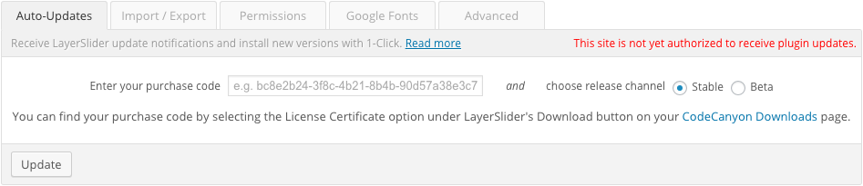
Illustration of Auto-Updates section
Updating the plugin manually
Once you've downloaded the most recent version from your CodeCanyon downloads page you can deactivate and remove the old version, then install the new one. Your sliders and settings are in the database, removing the plugin won't touch them. The new version always has backward compatibility, so you don't have to worry about losing your work.
Updating the bundled version in a theme
If you've received LayerSlider as a bundled item in your theme, new releases will be provided by the theme author through theme updates. Please note, our auto-update solution doesn't work with bundled versions of LayerSlider.
Troubleshooting
If the auto-update feature doesn't accept your purchase code, please double check that you've entered it correctly, without including spaces or other extra characters. Also, please note that due to technical reasons it won't recognize your theme's purchase code, even if it offers LayerSlider as a bundled item.
Rarely, a temporary outage in our/Envato services could also result unrecognized purchase codes. Please try it again a little later.
WordPress checks for new updates periodically at certain times. It also caches the results. If a new release doesn't show up immediately, please give it some time while WP can find it.
In some edge cases servers might configured in a way that prevents your installation to connect our update server. It's worth asking your web hosting company about this if updates don't show up and you've ruled out other possibilities.
Since version 5.6.2, the auto-update feature also has a "Download latest version manually" option. We still encourage you to set up auto-updates properly for your own convenience, but you can use this option in the meantime if you're experiencing problems.
Depending on the default settings, you may have to enable or disable some settings related to new features after an update. If you experience any unwanted change, it's always a good idea to check the settings of your sliders, there are probably new options to control these changes.
Adding a new slider
Press the Add New button located on the top of the LayerSlider admin page. The plugin should navigate to the slider builder interface after you've entered the name of your new slider.
Duplicating sliders
Hitting the duplicate icon () will create an identical copy of the corresponding slider. This feature is useful if you would like to experiment on a slider without changing the original. You can also use this feature to have a base when you want to build a slider with similar settings.
Removing sliders
You can remove a slider by pressing the trash can icon (). This action will hide the slider from all pages, but a copy in your database will be preserved for backup.
Restoring sliders
You can make the previously removed sliders visible under the Screen Options menu located on the top of the page by checking the Removed sliders option. You can restore sliders by pressing the restore icon ().
Permanently delete sliders
Having hidden backups from previously removed sliders can always be useful. This will not affect your site's performance, thus we don't recommend to permanently delete sliders. However, if you chose to do that, you can find the Delete permanently option in the drop-down list below your sliders.
Merging sliders
If you have slides in different sliders that you would like to use together, you can merge them. Just select them from the list and choose the Merge sliders as new option from the drop-down list below.
Number of sliders per page
You can find this setting under the Screen Options menu located on the top of the page.
Importing demo content
Press the Import sample sliders button located on the top of the LayerSlider admin page, then select the slider you wish to add. Importing all of them at once could be slow or problematic depending on your server settings.
Importing our demo sliders will allow you to see our settings and get familiar with the plugin. You can freely experiment on these sliders without worrying, since you can always import a new, untouched copy.
We've included several samples in the plugin and download package. Some of them are really small and easy to understand, while others are much more complex and use advanced features of the plugin.
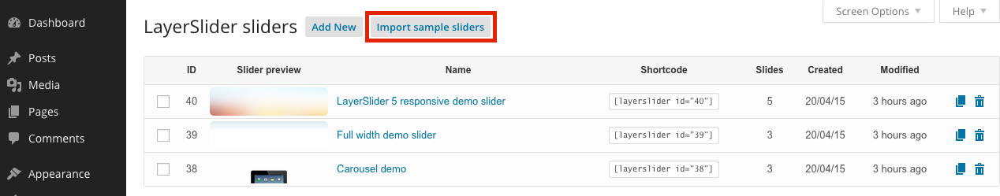
Illustration of the "Import sample sliders" button
More samples
To keep the install package at a reasonable file size we've only included our 3 most popular sliders. However, you can find more in the archive you've downloaded from CodeCanyon in the sample sliders folder.
Troubleshooting
Importing our demo sliders requires the PHP ZipArchive extension installed on your server. In the "Export sliders" box you should see a feedback message about the availability of this extension. Please contact your web hosting service provider if it's unavailable.
Importing a slider will add its images to your WP Media Library. Larger sliders might have a file size that exceeds the upload limit set on your server. To increase the maximum file size of an upload, please contact your web hosting company.
Larger sliders with many images could also consume considerably lot memory during the import. Most servers should not have any issue with larger sliders, but in some cases you might experience unexpected issues like partially imported sliders.
If you're experiencing any issue with importing, it's probably linked to memory or execution time limitation on your server. To fix these issues, please contact your web hosting company, since they usually don't offer a way to change these settings remotely.
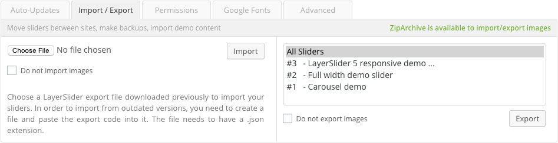
Illustration of the Import / Export section
Importing sliders
Choose a previously exported slider under the Import / Export tab and hit Import. Export files with a .zip extension generally contain slider images as well (if it wasn't disabled when the export file was created). Exports with .json extension contain only the slider settings.
Importing from outdated versions
In the earliest versions of LayerSlider there was only an export code that you could copy & paste to import sliders on other sites. If you have an export code from one of these versions you just need to paste it into a new text file and upload it in the same way. The name of the file could be anything, but you need to use the .json file extension.
Exporting sliders
You can export sliders by selecting them from the list under the Import / Export tab. By holding the Ctrl/Command button you can select multiple items. Since LayerSlider v5.1.0 you can also include the images used in sliders. Please note, selecting multiple sliders with images can drastically increase the exported file size and could lead import issues on sites with certain server sertings.
Troubleshooting
Importing sliders with images requires the PHP ZipArchive extension installed on your server. Under the Import / Export tab you should see a feedback message about the availability of this extension. Please contact your web hosting service provider if it's unavailable.
Importing a slider will add its images to your WP Media Library. Larger sliders might have a file size that exceeds the upload limit set on your server. To increase the maximum file size of an upload, please contact your web hosting company.
Larger sliders with many images could also consume considerably lot memory during the import. Most servers should not have any issue with larger sliders, but in some cases you might experience unexpected issues like partially imported sliders.
If you're experiencing any issue with importing, it's probably linked to memory or execution time limitation on your server. To fix these issues, please contact your web hosting company, since they usually don't offer a way to change these settings remotely.
Using Google Fonts
LayerSlider can load custom fonts hosted by Google on google.com/fonts. You can find the corresponding section on the plugin's admin page and add Google Fonts, which can be used in sliders or other parts of your site.
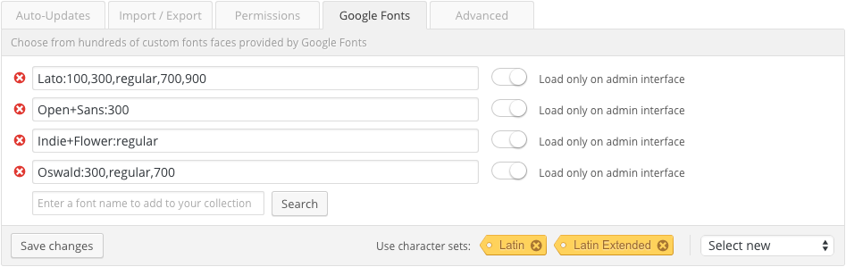
Illustration of the Google Fonts section
Character set support
LayerSlider uses Latin characters by default , but it supports Cyrillic, Devanagari, Greek, Khmer and Vietnamese scripts as well.
Themes with Google Fonts support
Many WordPress themes support Google Fonts. However, it's common that they only load them on the front-end pages and they will appear incorrectly when you would build a slider on the admin interface. To workaround this issue just add them in LayerSlider and check the "Load only on admin interface" option.
Provide non-admin users access to LayerSlider
Under the Permissions tab you can easily select any user role giving the members permission to change plugin settings and manage your sliders. By selecting the option Custom and entering a capability you can target users more accurately. For more information about WordPress capabilities, please read the Codex page.
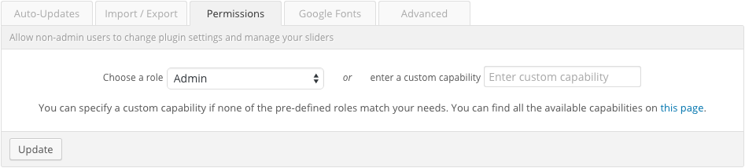
Illustration of the Permission settings
About the Advanced Settings section
Under the Advanced tab you can find many troubleshooting options to workaround common issues you might experience on your site. Please note, these settings can break your site when used incorrectly, and we don't recommend changing the defaults. These settings might help solving issues caused by 3rd party items, but you should only use them when it's necessary.
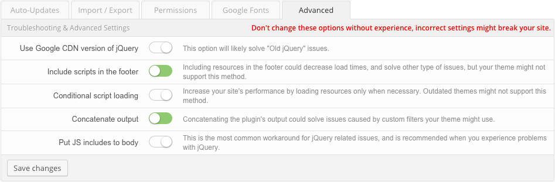
Illustration of Advanced settings section
Overview
The slider builder interface can be a bit overwhelming at first sight, since LayerSlider provides many options to customize your work for your own needs. There are many tools to provide help of getting started, just consider the advices below.
Always read the tooltips messages
Due to space efficiency we're using tooltips for describing what each options exactly does. Just place your mouse cursor over an option and a tooltip message will appear with additional information.
Use the preview mode
By pressing the Preview button you can see your work in action instantly. Don't by shy to change settings. If you're not sure about how an option exactly works, just change it and observe the differences in the preview mode.
Check out our samples
Discussed under Gettings Started / Importing the demo content, you can see how we built our own demo sliders and which settings we used to achieve certain animations. Don't be afraid making changes on these samples, you can import another copy at any time.
We've included several samples in the plugin and download package. Some of them are really small and easy to understand, while others are much more complex and uses advanced features of the plugin.
Slider settings
This is the page where the plugin navigates you after adding a new slider. On this screen you can set common settings like the size of the slider, and customize its appearance or features in the other sub-sections.
Illustration of the Slider Settings
Setting the slider layout
Mode
Description
Fixed size
The slider will have a fixed size, and it cannot be resized.
To use: Disable all Responsive mode and Full-width slider settings options. You can set the width of the slider in pixels or use a percentage value. You have to set the height of the slider in pixels.
Responsive
Responsive web design is aimed at crafting themes, plugins and other kind of web contents to provide an optimal viewing experience across a wide range of devices (from mobile phones to desktop computers). This mode will automatically scale your slider to fit to the available space on any device.
To use: Enable the Responsive and disable all Full-width slider settings options. You have to set both of the width and the height of the slider in pixels.
Full-width
In this mode the slider will be as wide as your browser window, even if your theme is using a boxed layout instead of edge-to-edge design. The height of the slider will be fixed. Layers will be not resized, but they will be repositioned if they have percentage values set for their Left and/or Top properties.
To use: Enable the Full-Width and disable Responsive options. You have to set Width to 100% and provide the value of Height in pixels.
Full-width+Responsive
The responsive function needs an initial proportion to calculate new dimensions for scaling. A full-width slider will always be as wide as your browser window, so your slider initial size depends on the viewing environment and the plugin cannot identify an exact proportion to work with. Another aspect is to control how scaling should work with large screens and when should it start to downscale your content. This can be set with the Responsive under option. In general it should be the width that your site has, somewhere around 1000 pixels.
The position of your layers can also be a concern on large screens when the slider gets really wide. For this matter, you can use the Layers container option. You can specify how wide your slider should normally be, then the plugin will wrap your content in an "invisible box" that is centered within the slider.
To use: Enable normal Full-width mode and set Responsive under and Layers container as described above.
Fullscreen support
At the moment LayerSlider doesn't have a dedicated fullscreen option. You can enter 100% x 100% for Width and Height, but you will likely need to make some changes in your theme to work properly. Since percents are relative values, you will need to make sure that all of the parent elements of the slider on page have the proper dimensions set, so the slider can take the available space as expected.
Please note, this requires some web development knowledge, and we cannot recommend it to users without experience. This is a highly requested feature and it will be added to the plugin shortly.
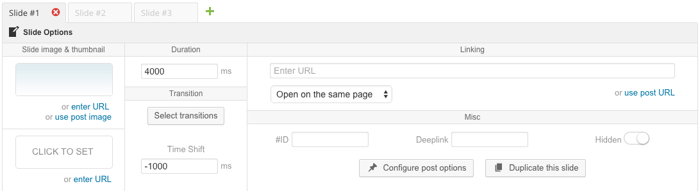
List of slides and the Slide Options area
About slide transitions
LayerSlider offers more than 200 pre-defined 2D/3D slide transitions. By using the Transition Builder it can be easily extended with custom ones for your own needs. Slide transitions will only use the background image of slides, since web standards don't offer a way to "capture" all contents within a slider. It's important to keep in mind that layers will not be used for slide transitions, even if they made to look like a background image.
Modern web browsers are required for 3D transitions to work properly. If you select any 3D transition, LayerSlider will prioritize them over 2D ones. The plugin has multiple fall-back levels whenever a visitor's machine is not capable of showing certain transitions. In general, 2D transitions are supported on all major web browsers.
Old slide transitions compatibility
We've introduced the current slide transitions with the release of LayerSlider v4.0.0. The earlier solution was still supported at a time, but later on it was entirely removed from the admin area in favor of its much more sophisticated successor. As of today, these settings are still supported under the hood to provide backward compatibility, although you cannot choose to use them in sliders built with the latest releases.
We might completely stop supporting old slide transitions in the near future.
Linking slides
Linking a slide will make its entire surface clickable. You can also link layers to add a button or a smaller control. Layers appear on top of slides, and will gain priority if you link both a slide and one of its layers.
Deeplink
Since LayerSlider WP 3.0, you have the option to deep-link slides. This means that you can give a special URL to users, which will start LayerSlider with the certain slide when they visit your site. To do that, you have to specify a Deeplink name in your Slide Options and use it as a reference in the URL.
If you've entered the name "surprise", you just need to append it to the end of your URL along with the hash tag symbol. For example, the URL "yourdomain.com/yourpage/#surprise" will start LayerSlider with the 4th slide (instead of the fist one) when someone navigates to the page with this URL.
Duplicate slides
Similarly to sliders, you can also duplicate existing slides to make a copy with the exact settings and layers they might have.
Hide slides
Hiding a slide will exclude it from the actual slider on your front-end pages. This means your visitors cannot see it, but you will still be able to access it in the Slider Builder. This feature is particularly useful when you want to hide half-finished slides, or keep older ones without actually deleting them. Please note, at the moment there is no way to make these slides visible on the front-end, even if you would use custom coding.
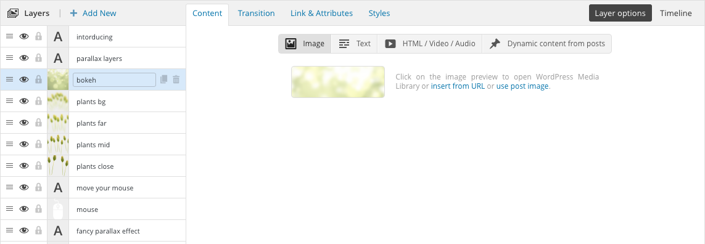
List of layers and the Layer Options area
Interface tips & tricks
Feature
Description
Naming layers
Making complex slides will require many layers. Naming them as you build your slide can be really useful to quickly navigate between them.
Re-ordering layers
You can drag and re-order layers by grabbing the icon. The exact order is particularly important when you work with overlapping layers, since it controls which layer should be on top of the other.
Select layers in Preview
Instead of trying to find an item in your list of layers, you can just click on it in the Preview for quick navigation.
Selecting overlapping layers in Preview
In some cases layers might cover each other in the Preview area and clicking on them will only select the uppermost item. That's why we've added a right-click mouse action, which will present you a list of layers occupying that area. Just choose the desired layer, then LayerSlider will jump to the corresponding item in your list of layers.
Locking layers
Locking a layer with the icon will disable the drag n' drop functionality in the Preview, securing it from moving around unintentionally.
Hiding layers
Hiding a layer with the icon will make it invisible in the visual editor and on your front-end pages. This is useful when you would like to keep a layer for later use, but prevent it from showing up in the actual sliders.
Choose between layer types
Type
Purpose
Image
Displays an image. You can upload a new image or choose an existing one from your WP Media Library. You can also insert from URL or pull the featured image from posts.
Text
This layer type should be used for most of the textual contents. You can select the role of the layer with the sub-controls. Do not wrap your content within an HTML element. This is why we've added those sub-controls. You should not use any HTML codes in this field, with the exception of <br>, <b>, <strong>, <i>, <u> and other general purpose inline text formatting elements.
HTML / Video / Audio
You should choose this type of layer to insert multimedia contents or use custom HTML besides text formatting. Your contents will automatically be placed in a <div> element. For using semantic HTML, you can select multiple element roles under the Text type instead of using HTML unnecessarily.
Dynamic content
Select this type of layer if you want to use contents pulled dynamically from your WP posts and pages. See Using the Slider Builder / Dynamic Layers section for more information.
Embedding videos
LayerSlider supports YouTube, Vimeo, and self-hosted HTLM5 video/audio out of the box. We've integrated many features for these solutions such as autoplay, showing a preview image for videos and pausing the slideshow while they are playing.
Just choose the HTML / Video / Audio layer type to embed multimedia contents. For YouTube and Vimeo videos you need to paste the embed code from their website into the text field. Click on the Add Media button to add self-hosted HTML5 video or audio.
At the moment we can't support other media players out of the box, since those solutions have their own distinct APIs to control media playback. However, users with web development experience can use the LayerSlider API to detect slider events and run custom code to control 3rd party media players.
Using WP shortcodes / Adding interactive content
You can do both, but you need to make sure to use an HTML / Video / Audio layer. LayerSlider will only render the content of shortcodes on the front-end pages, so don't be afraid if the slider builder interface doesn't show the result you would expect. Using interactive items highly relying on Javascript can be problematic, and might not work properly.
It also worth mentioning that in responsive mode LayerSlider only scales the layer element itself to gain extra performance. Any layer content should adapt the dimension changes on its own. While this happens automatically in most cases, shortcodes might insert complex HTML that ignores this and the content might not be resized in sync with the slider.
Layer transitions
You can create your animations with these settings. This section might be frightening at first sight, since LayerSlider offers many options to entirely customize your work. However, everyone can learn it quickly and easily by following the tips below:
Always read the tooltips messages:
Due to space efficiency we're using tooltips for describing what each options exactly does. Just place your mouse cursor over an option and a tooltip message will appear for additional information.
Use the preview mode:
By pressing the Preview button you can see your work in action instantaneously. Don't by shy to change settings. If you're not sure about how an option actually works, just change it and observe the differences in the preview mode.
Check out our samples:
Discussed under Gettings Started / Importing the demo content, you can see how we built our own demo sliders and which settings we used to achieve certain animations. Don't be afraid making changes on these samples, you can import another copy at any time.
We've included several samples in the plugin and the download package. Some of them are really small and easy to understand, while others are much more complex an uses advanced features of the plugin.
Old layer transitions
Since LayerSlider 5.0.0 we've started to use the GreenSock Animation Platform. This step introduced some changes compared to the previously used solution. Your sliders built with an earlier version will continue to work the same as before without making changes. However, the admin interface have dropped the old options in favor of the new engine, and it will automatically convert your settings whenever you try to edit an old slider. Since these new options are working in a different way, the animations might be slightly different in some rare cases, but it should be super close.
We might completely stop supporting the old layer transition system in the near future.
Link & Attributes
You can link a layer under its Link & Attributes tab. Enter an URL and set whether you want to open it on the current page or in a new tab/window. You can also enter a hash tag followed by a number to link a layer to another slide. For example #3 will switch to the third slide when someone clicks on the layer.
In this section you can also apply commonly used attributes (such as a unique ID or classes) on layers. These settings are made for users with web development experience and interest to use custom coding to achieve a customization level that a visual editor cannot provide.
Styles
Under the Styles tab of your layers you can find commonly used formatting options to customize their appearance. We highly recommend to use these settings whenever it's possible, instead of adding unnecessary HTML code to the contents of layers.
This is where you can also set the position of layers with the Left and Top options. While you can use the visual editor to move layers around, it's often better to fine-tune them here for a pixel-perfect result.
Adding post contents
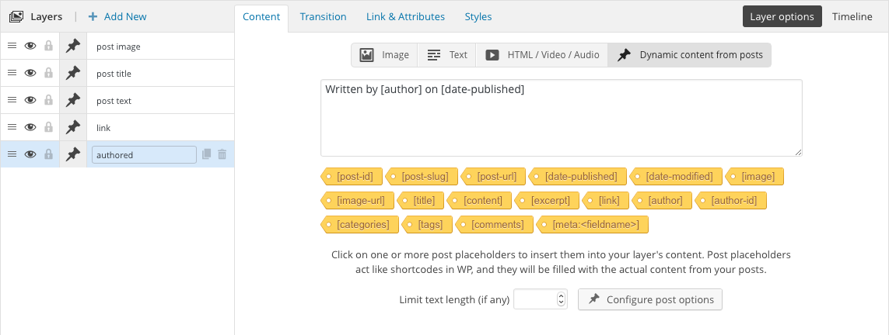
Illustration of dynamic layer settings
You can pull individual post information by using post placeholders. These are working very similarly to WordPress shortcodes. You can enter one or more placeholder into the layer's content area, then LayerSlider will automatically replace them with the appropriate content from posts. You can even mix them with static content. Example:
This post was written by [author] on [date-published] will be
This post was written by admin on March 13, 2015
Using post filters
By using the post filters you can target certain WP posts or pages to pull information from. LayerSlider supports custom post types, tags, categories, and taxonimies to find literally any kind of custom content that themes and plugins may use. To set filters you just need select a dynamic layer and click on the Configure post options button. In the opened modal dialog window you can also order the results in your preferred way.
Get the items from results to work with
The post filters are global across slides, but you can select items from the results independently. This allows you to work with posts in a custom order, for example you can retrieve only the even/odd posts from the results. If you want to follow the original order you can choose the option following, then LayerSlider will get them automatically.
Using mixed content
You are not forced to build sliders with dynamic contents only. You can mix them with static slides and layers.
Using custom post fields
You can use the [meta:fieldname] post placeholder to pull content from custom fields. Please make sure to replace the fieldname part with the actual field you want to pull information from.
Frequently Asked Questions
Q: Can I use static and dynamic contents at once?
A: Sure, you can mix them freely. Just make sure to select the Dynamic content from posts layer type.
Q: Can I set custom [excerpt] for posts?
A: Yes, just enable the excerpt field under Screen Options when you're editing a post/page, then enter the desired content.
Q: How excerpts are generated?
Manually entered excerpts will remain "as is", without any modification or formatting. Custom HTML code is allowed.
Auto-generated excerpts have all shortcodes and HTML tags removed and they will appear as plain text.
Auto-generated excerpts will be trimmed down to 55 words. The [...] "hellip" sign will be appended at the end if the text exceeds this limitation.
Custom word count used by themes will automatically be applied in your sliders. Developers can override it by using filter hooks.
Auto-generated excerpts respect WP's <!--more--> tag, so you can easily split your content at the point you want.
Q: Can I work with fixed posts?
A: No, the purpose of dynamic sliders is to automatically update their contents when you add a blog post or any other content to your site.
However, there is a simple workaround with similar result. You can find specific posts with unique properties (e.g. custom tag) just by setting the right filters in the Post Options section of dynamic layers. The results will not update as long as you don't add more posts that matches to the selected filters.
Q: Can I use content from multiple posts on the same slide?
A: At the moment you can't. This feature is yet to be added in a later update.
Q: Can I pull content made by WooCommerce or other plugins?
A: Yes, see the "Using custom post fields" part.
Q: Can I pull content from custom post fields?
A: Yes, see the previous point.
How to translate the admin user interface?
Download PoEdit
There are several apps available to help you with translating .PO files. PoEdit is a popular one, and it's available on every major platform. You can download it from here.
Start translating
Open the default LayerSlider-en_US.po file from your "/wp-content/plugins/LayerSlider/locales/" folder. When you save your work PoEdit will generate you a .MO file which will be needed to apply your work.
Name your files properly
WordPress recognizes your localization by a special formatting of file names. You will need to include the right language and country codes so it can identify what language your work is made for.
For example, a French localization would have the file names: LayerSlider-fr_FR.po and LayerSlider-fr_FR.mo. You must follow this syntax, including the dash, underscore, and lower- or uppercase letters.
Apply your localization
Copy your newly created .PO and .MO files into the "/wp-content/plugins/LayerSlider/locales/" folder. WordPress should use them immediately if you named your files properly.
Creating multilingual sliders with qTranslate
qTranslate is the most easiest way to create multilingual sliders in LayerSlider. It is a free and simple plugin that supports a shortcode-like syntax to enter text in multiple languages, so it can display the proper one for your visitors. LayerSlider supports shortcodes and other special syntaxes within the contents of layers, so you can enter something like this to create a multilingual slider:
[:en]English text[:de]German text
The line above will output "English text" if the visitor selected English page and "German text" if the visitor selected German. You can read more about qTranslate on its WP.org plugin page.
Translating with the WPML plugin
You need the "Multilingual CMS" version of WPML with installed WPML String Translation add-on.
Translating the plugin's user interface:
Navigate to WPML -> Theme and plugins localization
Select Translate by WPML option in Select how to localize the theme section.
In the newly appeared list of plugins, select LayerSlider and click the Scan selected plugins for strings button.
Under WPML -> String translation menu item, you can now see and edit the texts that LayerSlider uses.
Creating multilingual sliders:
LayerSlider registers translatable strings when you save your work. If you want to translate a previously created slider, you need to re-save it, even if you won't change anything. Once LayerSlider registered the translatable items, they will appear under the WPML -> String translation menu item in your WP admin sidebar.
Method 1: Inserting sliders via shortcodes
You can place your sliders into pages and posts with their corresponding shortcodes. You can find the shortcode of each slider in the list of sliders you have, or at the bottom of the Slider Builder page next to the save button. To insert a slider just edit a WP page or post and place the proper shortcode into the WordPress text editor.
WP shortcodes are one of the most commonly used methods of inserting contents to your site. A lot of other solutions (e.g. a page builder in themes) can also accept the LayerSlider shortcode to add sliders to your pages.
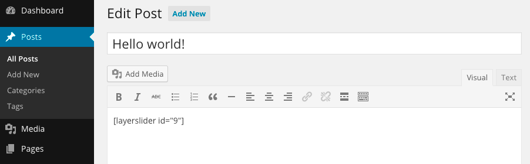
Illustration of using shortcodes in WP Post and Pages
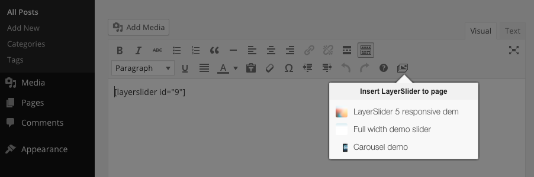
Using the LayerSlider editor tool to list and insert sliders
Method 2: Inserting sliders via the LayerSlider WP widget
LayerSlider supports widgets, so you can add sliders to your front-end pages just by a drag n' drop. To do that, navigate to the Appearance menu on your left sidebar and select "Widgets". Grab the LayerSlider WP widget and drop it into one of your widget areas.
Please note that some themes may not support a widget area that you're looking for. In this case, you can create a new widget area by editing your theme files. Here is the official documentation about widgetizing your theme. However, this requires web development knowledge and we don't recommend for users without experience.
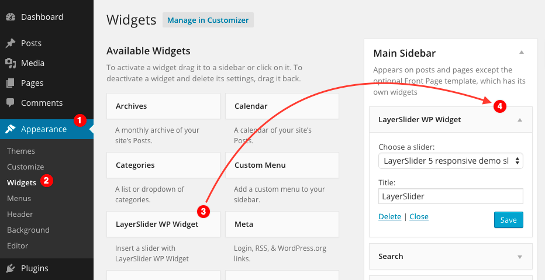
Inserting a slider with the LayerSlider WP Widget.
Method 3: Inserting sliders with a PHP function
Because a slider can be an integral part of your site, you may want to insert it dynamically from the template files. There is a PHP function (with additional filtering options) to do just that. For example, you can call it from the header.php file of your theme and it will insert your slider into the corresponding area. By providing filters you can show it on certain pages only depending on your settings. Here is the function definition:
layerslider ( mixed $sliderID [, string $pages] )
The $sliderID parameter can be found in the list of your sliders on the LayerSlider admin area. See the first table column.
The $pages parameter is a comma separated list of WordPress pages either by their name or database ID. If you are unsure about your page names or IDs, look at their URL, it is the last component.
There is a special page name called homepage, with you can filter LayerSlider WP to display the slider on your home page only. It also works if you set up a static custom page instead of the default post listing.
The following examples are all valid. You can use any of these, you can even mix them for your own needs:
<?php layerslider(1); ?> // Displays the first slider on every page
<?php layerslider(1, 'homepage'); ?> // Displays the first slider only on your home page
<?php layerslider(1, 'my-custom-post-title'); ?> // Displays the first slider on a custom page by name
<?php layerslider(2, '1369'); ?> // Displays the second slider on a custom page by ID
<?php layerslider('homefullwidth', 'category-name'); ?> // Displays the slider with the slug 'homefullwidth' on ali/custom page by a category name
<?php layerslider(3, 'homepage,about-us,1234'); ?> // Displays the third slider on multiple pages
When you want to insert a slider it is important to check its ID on the LayerSlider WP slider list page. When you remove some sliders, their IDs won't be re-indexed and the sequence may broke up. This is important to keep persistent your sliders preventing unwanted changes on the already inserted ones.
About Transition builder
Since version 4.0.0, LayerSlider WP supports various types of slide transitions. The Transition Builder offers you an easy-to-use visual editor to create custom transitions for your own needs. Transitions created with the editor will automatically appear in the list of available transitions when you're editing a slider.
Tips & tricks
We can recommend the same tips mentioned in the Slider Builder section:
For more information about the available settings, just point your mouse cursor over an option and a tooltip message will appear describing the option's function and possible values.
Use the preview mode. The best way to learn is to instantly see how each option affect your work. Don't be afraid of changing settings, just observe the differences to understand their role.
We have sample transitions, too! They should be already added to the Transition Builder when you first visit the page. You can see the settings we've used to build these samples. There are some really simple ones, but you can find much more complex transitions as well to demonstrates advanced uses.
Building 3D transitions
3D transitions are made up with 3 animation steps to create more-complex transitions with multiple actions. The "animation" step is required, but the "before animation" and "after animation" steps are optional. You can use them to do some preparation before the animation starts or restore back some settings after it is finished.
To help you better understand what are these steps, here is a simple example:
Before the animation starts, you may want to scale down columns
Then rotate them to left
Finally, you want them to scale up back
If you want a really simple transition, you don't have to use all the steps. In this case, please make sure to untick the "Enabled" checkboxes for the corresponding steps.
Easings
Easings are timing functions of the animations. You can manipulate the movement of animated objects with them. Please visit this page to find out more about easings and see real-time examples with visual representation.
About LayerSlider WP Skin Editor
The LayerSlider WP skin editor offers you a graphical way on your WP admin area to modify LayerSlider skins without the need to work with files on FTP. The Skin Editor automatically detects additional content, so you can customize skins from other sources as well.
Editing a skin requires some basic CSS knowledge, please do not attempt to modify a skin if you aren't familiar with CSS. Malformed or invalid CSS code can break your slider appearance.
Please note, updating the plugin (including auto-updates) will override the plugin folder along with your modifications. Consider using the CSS Editor or back-up your modifications before updating.
About LayerSlider WP CSS Editor
With this editor you can enter your custom CSS code, which will be included on pages containing LayerSlider sliders. This gives you a chance for much more complex customizations that the Slider Builder interface cannot provide. Your CSS code will also be included in the Slider Builder, thus the Preview mode should pick them up and show the appropriate result on-the-fly.
Using CSS requires some web development experience. Please do not attempt to use this editor if you're not familiar with CSS. Malformed or invalid CSS code can break the appearance of sliders or your site.
About LayerSlider API
LayerSlider is built on standard web technologies like HTML, CSS and Javascript, and offers a way to extend the capabilities of the plugin through the LayerSlider API. Please note, this requires programming skills and web development experience, thus we cannot recommend it to users without the necessary knowledge.
Event reference
Event callbacks can be used to modify the slider behavior, or wire it up with external solutions. The following events can be used under the Event Callbacks tab of the Slider Builder.
Event
Description
cbInit
Fires when LayerSlider has loaded.
cbStart
Calling when the slideshow has started.
cbStop
Calling when the slideshow is stopped by the user.
cbPause
Firing when the slideshow is temporary on hold (e.g.: "Pause on hover" feature).
cbAnimStart
Calling when the slider commencing a slide change (animation start).
cbAnimStop
Firing when the slider finished a slide change (animation end).
cbPrev
Calling when the slider will change to the previous slide by the user.
cbNext
Calling when the slider will change to the next slide by the user.
Slider data
You can add a custom named variable in the function definition that will be filled up with data provided by the plugin. The cbInit callback will receive the slider DOM element itself, while all of the other events will have the data object of the slider. The data object can be used to access or override most of the settings that the slider is working with. Usually it is used to get the information related to slides and slideshow progression. The most commonly used properties are the following:
Property
Value
data['prevLayerIndex']
Returns the index of the previous slide
data['curLayer']
Returns the jQuery object of the current slide
data['curLayerIndex']
Returns the index of the current slide
data['nextLayer']
Returns the jQuery object of the next slide
data['nextLayerIndex']
Returns the index of the next slide
data['layersNum']
Returns the number of slides in the slider
data['isAnimating']
Returns true if the slider is animating at the time of execution
To list all properties in the data object just paste this code snippet into a callback function and check your browser's Javascript console:
The below API methods can be used to control sliders externally, and wire them up with 3rd party solutions.
Method
Description
Example
(integer)
The slider will change to the specified slide. It starts with 1.
$('#slider').layerSlider(3);
next
The slider will change the next slide.
$('#slider').layerSlider('next');
prev
The slider will change the previous slide.
$('#slider').layerSlider('prev');
stop
Will stop the slideshow.
$('#slider').layerSlider('stop');
start
Will continue or start the slideshow.
$('#slider').layerSlider('start');
data
Returns the slider data object
var data = $('#slider').layerSlider('data');
userInitData
Returns the object of the slider options which has been set by the user in the init code
var data = $('#slider').layerSlider('userInitData');
defaultInitData
Returns the full list of the default slider options
var data = $('#slider').layerSlider('defaultInitData');
Make sure to use the proper selector when targeting sliders. While in this example we use #slider, you will likely have different IDs.
Examples
Switch slides with custom controls:
<a href="javascript:void(0);" onclick="$('#slider').layerSlider(2);">Change to slide 2</a>
Combining callbacks and API methods:
The following example will bring up a message after every slide change with the current slider number. It can be used with the cbAnimStop event callback.
function(data) {
alert('The current slide is: ' + data['curLayerIndex']);
}
Custom navigation area:
On this page you can find a complete example for building a custom navigation area. Please note, this example involves other programming languages such as CSS, HTML and DOM manipulation, and it requires web development experience.
Before reporting an issue
There are some common practices you should try before reporting an issue:
Always use the latest software versions! This includes your WordPress installation, LayerSlider, the WP theme you're using and any other plugin installed on your site. Third party plugins and themes (not hosted on wordpress.org) may not update automatically. Taking care to keep everything up-to-date can spare you from a lot of problems and frustration.
Try to find the source of the problem! Issues could be related to other plugins/themes and their settings. We often ask our customers to temporarily disable other plugins and switch to one of the default WP themes. This way we can verify that the issue is related to LayerSlider, and is not an incompatibility with another item. If it solves the problem, you can find which item caused the trouble by re-enabling them one-by-one and watching when the issue comes back.
Try to find a solution! A lot of times issues occur due to incorrect settings or other environmental factors. It's always a good idea to quickly review your settings and try to find a solution in the documentation or online by searching through our FAQs, the comments section and the guides below.
General issues
Symptom
Solution
Instead of the slider only the shortcode appears
Although WordPress parses shortcodes at most places, there are some exception. Most notably the Text Widget, that will ignore any shortcode. To fix this you can download 3rd party solutions that will not ignore your shortcodes.
An error message says the slider was not found
Please make sure that you've inserted the right shortcode, and the corresponding slider wasn't removed previously. Remember, the admin interface can list your removed sliders, but they will not show up on front-end pages until you restore them.
The slider doesn't show up at all
This most likely caused by a Javascript error on page. Please try to temporarily disable other plugins and switch to one of the default WP themes to see if it helps.
The slider only shows a loading indicator
This issue might occur when the slider cannot load some of the images used in the slider. They might be removed from your WP Media Library or pointing to incorrect URLs.
The slider doesn't proceed to the next slide
This is most likely the exact same issue described in the previous point.
Some images doesn't show up in the slider or have incorrect size/position
This is usually the symptom of image preloader solutions. It can be a part of another plugin or a built-in feature in your theme. Please review your settings, since most authors offer a way to disable this feature.
Flashing items when changing slides
This issue usually caused by a duplicate version loaded of the GreenSock animation library on your site, which may be used by your theme or another plugin. At the moment there isn't any known method to avoid issues like this, other than editing the theme/plugin files and manually prevent loading this library.
Layers quickly appear before animating in to the slide
See the previous point. It's the same issue.
The slider doesn't seem to repond changes made on the admin interface
If you're using a caching plugin like W3 Total Cache you need to manually empty the caches, so you can see the changes in real-time. These plugins usually offer a setting to disable caches for logged in admin users.
Video issues
Symptom
Solution
Grey preview image
Some videos don't have HD preview images, and you might need to lower the preview quality in your slider settings if it shows a grey image with 3 dots.
No preview image
Vimeo treats Pro/Plus videos as private, even if you make them publicly available. This causes the preview image not appearing in the slider making your videos invisible in some cases.
Videos in the slider have weird size or position
This usually caused by the FitVids Javascript plugin, which can be a part of other plugins or the theme you're using. By temporarily disabling other plugins and switching to another WP theme you can find which item on your site causes this issue. Please contact with the plugin/theme author to solve this issue.
jQuery-related issues
Symptom
Solution
Multiple jQuery issue
Your site includes the jQuery library in multiple times. This could be an issue with another plugin or the WP theme you're using. Enabling the Put JS includes to body option in the Troubleshooting & Advanced Settings box should fix this issue.
Old jQuery issue
LayerSlider requires using an up-to-date version of the jQuery library. We strongly recommend to have at least version 1.8, but some of the new features might only work with newer releases.
If LayerSlider shows an "Old jQuery issue", it's likely that another plugin or your WP theme uses an outdated release. Please make sure that every plugin and your theme is up-to-date and you're using the latest releases. You can also try to enable the Use Google CDN version of jQuery option in the Troubleshooting & Advanced Settings box, but it's possible that you need to contact with plugin/theme author and ask for a solution if nothing helps.
jQuery Transit issue
This issue occurred when another pugin/theme loaded a second copy of the jQuery Transit library. Since LayerSlider v5.0.0, we're no longer using jQuery Transit, and this issue will not affect users after upgrading.
Saving/Database issues
Symptom
Solution
I cannot save an existing slider
There can be several reasons why this happens. Most likely it is an incompatibility with another plugin that causes a Javascript error or some kind of server-side issue. Please try to temporarily disable other plugins and switch to one of the default WP themes to see if it helps.
I cannot add/edit/remove sliders
If you're experiencing multiple issues managing your sliders, there's probably a database related issue. A common workaround is to disable LayerSlider and then immediately re-active it. This will trigger the activations scripts in the plugin that will attempt to rebuild/repair the DB table that LayerSlider uses. If this doesn't help, please contact with your web hosting provider and check for any database related problems on your sites such as permissions issues.
All of my work is just disappeared
This most likely the same issue described in the previous point. Your work is probably still intact, but a database issue cloud prevent the plugin to show them on the admin interface.
Other issues
Symptom
Solution
The LayerSlider menu item doesn't show up on the admin sidebar
By default LayerSlider is only accessible for admin users. See Getting Started / Permission settings to change this behavior. If you have an admin account it's possible that these settings have already been changed and the plugin page became unavailable for you.
It's for developers!
You can skip this part of the documentation if you are not a developer. Our guides in the developer documentation were made for theme authors and programmers who want to incorporate the plugin into a larger work, or want to modify and extend its capabilities.
What it has to offer?
Our developer documentation includes the licensing terms, theme integration guides, plugin APIs, and any other assets you might need to use to work with the plugin beyond its basics.
Added "Use slider markup caching" option to advanced settings
Added "Download latest version manually" option to the Auto-Updates feature
The "Concatenate output" option is now disabled by default
The "Include scripts in the footer" option will now move all inline scripts to the footer as well
This will also fix other potential JS errors, such as when jQuery is moved to the footer
Fixed issues with enabled caching when the same slider is inserted on a page repeatedly
Fixed the "Conditional script loading" option, which caused sliders to not render properly under WP 4.3
Changes in version 5.6.1
Fixed saving certain options in Slider Settings
Fixed Word Wrap option in live preview
Changes in version 5.6.0
Huge performance boost:
Our Slider Builder interface loads and works drastically faster, while it uses considerably less resources on both the server and client-side. The amount of content you add to sliders no longer has an impact on performance, the editor should always be fast and responsive. This also fixes the memory limit and execution time issues on servers with limited resources.
Caching slider markup:
LayerSlider now uses its own caching mechanism to spare your server from unnecessary load. Most installations support memory caching, which provides instant access to your sliders based on visiting frequency. This means that a slider on your front-page could stay in memory for improved speed, but another one in a sub-page might fall back to regular disk cache to free up resources for the content matters the most.
Minor interface changes:
We made a minor interface change in the list of layers, which you hopefully find familiar. Hiding/locking layers now has a permanent effect. The layer settings section has been placed closer to the preview, so you need to scroll less.
New features:
Added bulk slide creation when selecting multiple images
The slider builder now restores previous editing sessions (i.e. active slide/layer, etc)
You can now easily select overlapped layers just by right-clicking on them in Preview
Other changes:
Updated GreenSock library for improved animation performance (especially on mobile)
Removed old media uploader support (pre-WP 3.5)
Fixed issues:
Fixed WordPress debug message under WP 4.3.
Fixed Screen Options button under WP 4.3.
Fixed several issues with embedded YouTube videos
Fixed issues when adding images from external URL
Fixed duplicating sliders with really long names
Fixed glitches when reordering layers
Fixed the layerslider_slider_markup filter hook
Fixed losing transition and layer style settings when saving (magic_quotes)
Fixed memory limit and execution time issues on servers with limited resources
Fixed timeline
Changes in version 5.5.1
Fixed WordPress debug message under WP 4.3.
Changes in version 5.5.0
Added back the auto-generated excerpts based on the native WP behavior:
Manually entered excerpts will remain "as is", without any modification or formatting. Custom HTML code is allowed.
Auto-generated excerpts have all shortcodes and HTML tags removed and they will appear as plain text.
Auto-generated excerpts will be trimmed down to 55 words. The [...] "hellip" sign will be appended at the end if the text exceeds this limitation.
Custom word count used by themes will automatically be applied in your sliders. Developers can override it by using filter hooks.
Auto-generated excerpts respect WP's <!--more--> tag, so you can easily split your content at the point you want.
Text length limitation will remain as an optional feature on a per layer basis.
Providing update notification for unauthorized sites as well
The settings boxes below your list of sliders has been grouped under a tabbed interface
Significantly improved YouTube video playback behavior
Fixed an issue that prevented some users to properly import our sample sliders
Fixed update installation from LayerSlider's admin interface
Fixed 'yourLogo style' option in Slider Settings
Fixed an issue that caused appearance issues for a few users in Slider Settings
Prevent the LS Help menu entry showing up on non-LayerSlider admin pages
Fixed the 'Enjoy using LayerSlider?' share sheet appearing in cases when it should not
Extended developer documentation with improved examples
Updated End-User documentation
Changes in version 5.4.0
Entirely new documentation
Added option to import sliders without their images
Slide backgrounds now parse shortcodes when used in "Enter URL"
The LayerSlider shortcode can now accept filtering options
Improved compatibility with image preloaders
Improved compatibility with certain plugins/themes
Fixed several issues with dynamic layers
Fixed issues when the same slider was inserted on a page in multiple times
Fixed TinyMCE editor tool to properly work with multiple instances on page
Fixed some potential JS errors that could happen in some very rare cases
YouTube video thumbnails have not been loaded until the previous slide
Changes in version 5.3.2
Fixed skins on Windows servers
The skin URL now respects HTTPS sites
Importing sliders now restores their slug/alias
Various other small fixes and improvements
Changes in version 5.3.1
Fixed issues with skins
Fixed a PHP fatal error on certain installations
Changes in version 5.3.0
Added new API method 'redraw' to update the slider's layout and contents.
Fixed Javascript error if a slider doesn't have any slide.
Fixed several issues related to self-hosted HTML5 video playback.
Fixed responsive mode of full width sliders when the orientation changes on mobile devices.
Added LS_Sources class for developers to load skins and demo sliders externally.
Added Turkish translation thanks to marketplace user thernic.
The LayerSlider shortcode is now registered globally, thus page builder solutions can pick it up automatically.
Improved compatibility with CloufFlare's RocketScript.
Revamped auto-update modal window to fit WP's new design.
Fixed an issue related to invalid JSON data, which caused various issues on the admin interface in some cases. Most notably it broke adding/removing slides and the WYSIWYG editor.
Fixed "enter URL" button of slide background.
Fixed "undefined constant WPLANG" error message that occurred on some installations.
Changes in version 5.2.1
Added "Latin Extended" to default Google Fonts character sets
Fixed slider slugs/aliases
Fixed the transition chooser appearing when hitting the Enter key in text fields
Fixed broken layer style settings when using double quotes in certain options
Fixed some dynamic contents not showing up in real-time previews
Selecting recently used colors in the color picker now properly update the WYSIWYG slider editor
Other small bug fixes and improvements
What's new in version 5.2.0?
New features
A major interface revamp with flat design
New transition gallery design with filtering options
Added option to apply the currently selected transition to other slides
Added option to set post image as the slide background
Added option to link the whole slide to post URL
Added option to easily link layers to post URL under the 'Link' tab
Added option to easily use post image without placeholders
Supporting meta post placeholders to print out non-standard post informations (e.g. product details in WooCommerce)
Supporting all Google Fonts character sets
Added an option to set the duration of the fade transition when the slider is showing up for the first time on page load
Added an option to start the slider only if it enters into the viewport
Added an option to hide the slider on mobile devices
Added an option to hide the slider under the given value of browser width in pixels
Added an option to hide the slider over the given value of browser width in pixels
Recently used colors in the color picker
Support qTranslate in dynamic post contents
Support 'random' in shortcode and LS_Sliders PHP class
Support category-name filter in layerslider() PHP function
Support for including multiple media sources for self hosted video/audio
Added new API methods: userInitData, defaultInitData
Changed API properties: prevLayerIndex, curLayerIndex
Improvements
Quicker and more reliable saving method
Fixed every known issues with import/export
Fixed character encoding issues
The plugin no longer relies on mb_eregi() PHP function
Fixed missing custom thumbnails when the 'hover' option was selected for the navigation area
Fixed several issues with full width sliders, including the "jump" when the page loads
Fixed TinyMCE LayerSlider button under WP 3.9+
Sliders are no longer remain visible on front-end when they removed instead of deleting
Fixed an issue that reset the post options after duplicating slides
Fixed several issues with embedded HTML5 videos
Fixed an issue which prevented to show embedded video thumbnails on first slide
Fixed the stuck loading indicator when some images were missing or couldn't be loaded
Fixed the curLayerIndex API variable
Security fixes, including a potential directory traversal issue
Added an updated version of Greensock Animation Engine with performance improvements and bug fixes
Lots and lots of other fixes and improvements
Bug fixes
Prevent Google and other search engines to index the plugin folder of LayerSlider
Slide background images now have proper "alt" attribute based on the attachment/post details
Video layers are ignoring the Show until parameter while playing
Fixed an issue that caused background flickering in some cases
The slider won't hang up if an image layer couldn't be loaded
Reduced package file size by removing unnecessary files and legacy code
Added some extra CodeMirror instances to edit custom CSS more easily
Added play icon to the 'noskin' skin
Fixed broken autoplay feature of HTML5 videos
Changes in version 5.1.2
Fixed 3D transitions in the latest versions of Chrome
Improved compatibility with WeatherSlider WP and wpStickies
Changes in version 5.1.1
Fixed some appearance issues
Fixed an issue in the new import method
Changes in version 5.1.0
Added support for exporting/importing sliders with images
Added ability to export/import multiple sliders with custom selection
Added slider slug/alias support
Added notification of plugin dependencies when detecting issues
Fixed several issues related to dynamic sliders from posts
Fixed several issues related to embedded videos
Fixed timeline view
Fixed slide linking issue
Fixed the slide ID attribute
Fixed issues with relative URLs
Fixed invalid error messages after saving
Fixed "Convert" button when updating from outdated versions
Various other fixes, improvements and interface enhancements
Extended APIs for developers with extended documentation
Changes in version 5.0.2
Added [image-url] post placeholder
Fixed excerpt post placeholder
Fixed slide transition issues
Fixed blank slider editor issue
Fixed loops slider setting
Fixed HTML5 video sizing issue
Reduced installable ZIP by dropping old sample sliders to avoid installation problems
Interface adjustments
Changes in version 5.0.1
Added Dashicons support
Fixed file permissions that caused various issues in some cases
Fixed WPML and better URL handling
Fixed tag and category list post placeholders
Fixed locales
Fixed other small issues, which caused PHP warnings
Fixed layer transitions if there are no slide background images
Fixed the starting position of layers with percentage value of width
Changes in version 5.0.0
New features
Build dynamic sliders from WordPress posts and pages with advanced filters for finding posts or mixing them with static content
Use Google Fonts with built-in search and configuration options
Advanced settings like scripts in the footer, conditional script loading etc. to improve performance
Parallax Layers - a fancy parallax effect by mouse move
New layer transitions: rotateX, rotateY and skew with option to set transformOrigin
Added a new skin
Easily upload and insert self-hosted HTML5 video & audio
Option to restore or permanently delete removed sliders
Bulk actions with option to merge sliders together
Added “Max-width” option for responsive mode
Added “Lazy load” option
Interface changes
Major interface revamp
Using CodeMirror at various places for CSS and JS code editing
Added timeline view to review your transition timings like in a movie editor
New image upload boxes with an easier way to load images from external URLs
Added a LayerSlider entry under the “New” menu on the admin bar
Added LayerSlider helper for page and post editor to include sliders easily
Using cleaner language across the plugin and docs
New sample sliders included
Improvements
Slides and layers can now animating at the same time
Layers can now fade + slide at the same time
Super smooth transitions with the Greensock engine
Improved some layer transitions like fade, slide (axis-free), scale, etc.
Improved crossfading slide transition with semi-transparent PNG files
Smarter preloading images with lazy load
Considerably cleaner markup
Ability to override the default slider settings
Added lots of action and filter hooks
Uploaded contents are not relying on URLs anymore
Using nonces to secure your pages
Brand new docs
Fixes
Fixed the '1px slide transition bug'
Fixed markup issues such as missing alt attributes in some cases
Improved saving to avoid some web server related issues
Before reporting an issue
There are some common practices you should try before reporting an issue:
Always use the latest software versions! This includes your WordPress installation, LayerSlider, the WP theme you're using and any other plugin installed on your site. Third party plugins and themes (not hosted on wordpress.org) may not update automatically. Taking care to keep everything up-to-date can spare you from a lot of problems and frustration.
Try to find the source of the problem! Issues could be related to other plugins/themes and their settings. We often ask our customers to temporarily disable other plugins and switch to one of the default WP themes. This way we can verify that the issue is related to LayerSlider, and is not an incompatibility with another item. If it solves the problem, you can find which item caused the trouble by re-enabling them one-by-one and watching when the issue comes back.
Try to find a solution! A lot of times issues occur due to incorrect settings or other environmental factors. It's always a good idea to quickly review your settings and try to find a solution in the documentation or online by searching through our FAQs and the comments section.
How to Contact Us
If you didn't find answer to your problem, please ask your question on the item discussion page or send us a private message from our Codecanyon profile page (See the "Email kreatura" box on the right sidebar) - in this case we will reply via email. We can answer your support questions only in these ways, please do not email us directly.
IMPORTANT! For fast troubleshooting, please send us detailed informations about the issue you're experiencing. Also send us your site url whenever it's possible, so we can check your slider for potential issues and quickly suggest a solution. Please note, that we cannot troubleshoot from screencast videos or screenshots.
Please be patient as it takes some time until we respond (usually in 24 - 48 hours).